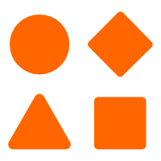

丁宁
女 | 23岁 | 前端开发工程师 | 深圳
手机：13267790335 | 微信：nding16 | 邮箱：16nding@gmail.com
教育经历
汕头大学（2016年~2020年）
 技能
熟悉HTML5和CSS页面布局技巧，Flex布局，能将设计稿完美还原
熟悉JavaScript技术，掌握闭包，原型，继承，DOM等特性,熟悉 ES6，包括 let / Promise / await / 析构赋值等
熟悉前后端分离技术，包括 AJAX、跨域、前端路由、Cookie、Session 等
熟练掌握 React的使用，包括 Hooks、相关组件 antd等
熟悉 git 和 jenkins 代码发布部署流程
迅捷的沟通，良好的人际关系和团队合作精神，我可以与来自不同背景的人成功互动，确保并促进项目参与
 工作经历
工作经历
-
从实习开始至今的公司--QTrade
2020.06--至今
工作描述
该公司率先开发出基于腾讯企点互动平台，方便快捷的语义识别nlp的投标系统
负责公司页面需求开发
参与以下项目：
- 运营活动
- 和一创展业平台合作的联合平台
- 前端组件库网页部署
- 企点首页债券推荐优化
- 配适并优化nlp识别弹窗
- nlp手动录入弹窗
开发H5抽奖活动页面，并兼容IE浏览器，成功推广新功能并为新功能增加日活。
技术栈：vue开发我司和一创展业平台的合作页面，使得用户可以在我司平台上投一创的标。
技术栈：flex+react+ant design组件组件库官网页面优化与Jenkins构建，使组件库官网可以在开发环境展示，加强前端开发与UI的沟通效率。
技术栈：webpack+Jenkins+gatsby+react用户首页推荐的债券支持查看该投标的历史投标数据，进行新建和修改，并实时同步数据更新。
技术栈：flex+react+ant design组件+websocket与同事合作，展示nlp识别的多条投标内容弹窗，使用户可以通过语义对多条投标进行新建与修改，该功能作为公司业务核心功能广受好评。
技术栈：flex+react+ant design组件用户手动录入语料，展示nlp识别后语料。
技术栈：flex+react+ant design组件